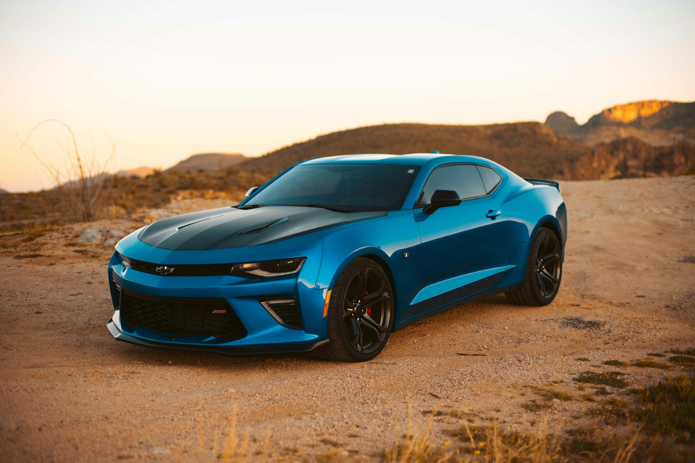

Oculo —
глаз, не шар
Динамичный сайт вокруг настоящего кадра. Параллакс, скролл, магнит кнопки — без светящихся градиентов.
Принцип
Кадр ведёт.
Движение слушает.
Как на motionsites и loadmo.re: объект и буква — герои. Курсор чуть сдвигает фото. Скролл поджимает кадр. Кнопка тянется к руке.

Материал- 01Никаких blob / glow / particle как «дизайна»
- 02Герой — фото или сильная буква, не абстрактный суп
- 03Motion точечный: press, parallax, spring — из 60fps
Насмотренность
Библиотека,
не фантазия
Источники, с которых берём ритм и приёмы — не чужой бренд один в один.
motionsites.ai
Vintage Care · промпты сайтов
getlayers.ai
слои · scroll / mouse motion
60fps.design
дорогие микро-взаимодействия
cta.gallery
призывы, на которые кликают
loadmo.re
смелый mobile
supahero.io
геройские секции
navbar.gallery
паттерны навигации
refero · DESIGN.md
дизайн-системы для агентов
kage.design
UI → промпт / MCP
21st.dev
community UI
Дальше
Готов применить глаз к твоему продукту
Этот репозиторий — полигон насмотренности. Следующий шаг — живой сайт по ссылке или коду.